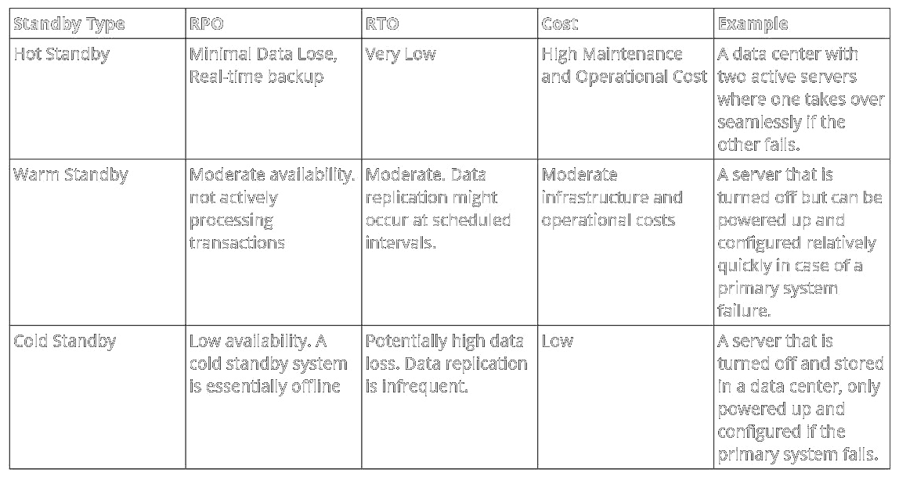
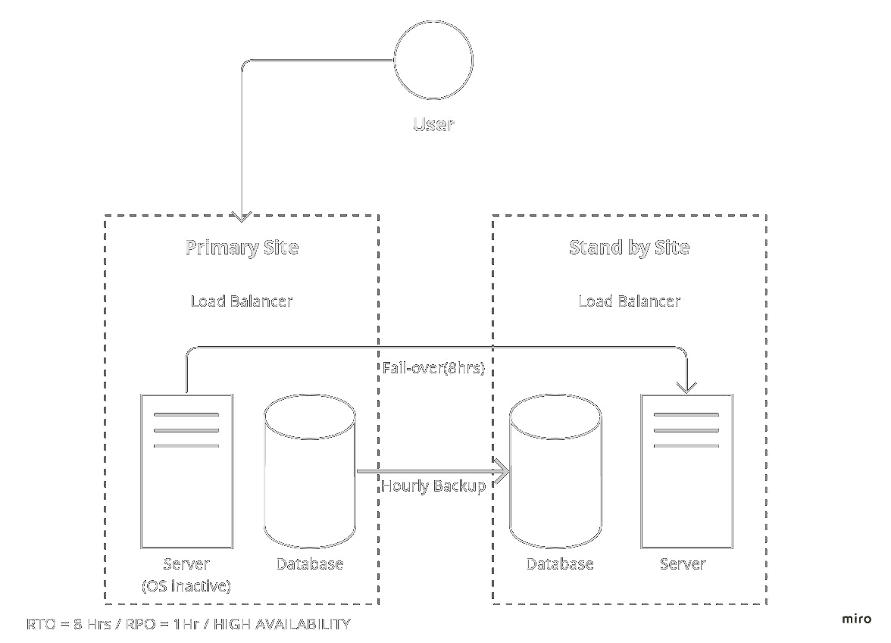
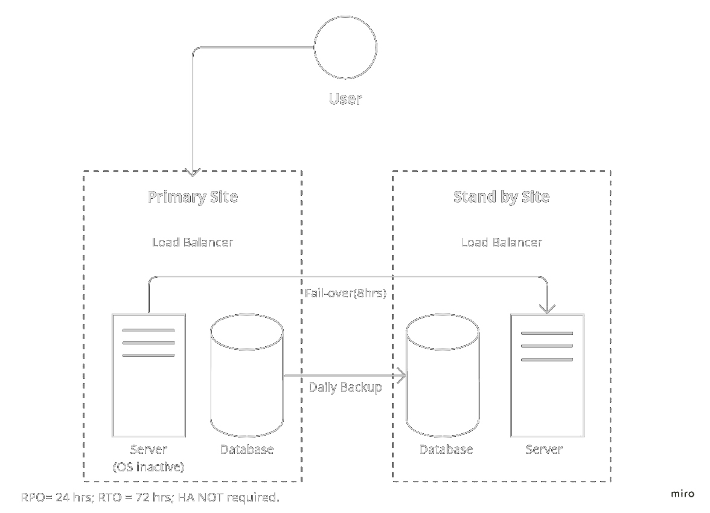
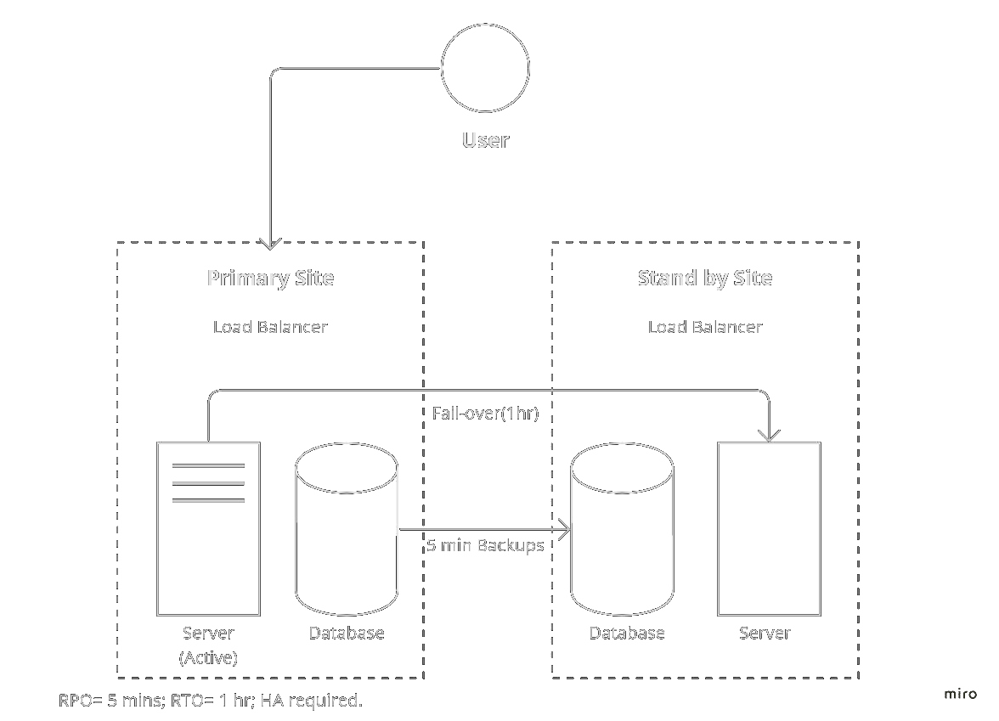

Welcome to my Information and Security Management Module Eportfolio .
Below you will find reflections, assignments and information gathered from all units.
Unit 1
Learning Outcomes: An intorduction to risk management
Having learned the basic fundamentals in secure software development, I became increasingly eager to explore into what could be considered the broader perspective: Risk Management. In this unit, various information security management concepts are introduced, providing awareness on different facets of the term "threat." Moreover, Unit 1 offers a comprehensive overview of risk assessment frameworks and mitigation strategies, which I think is essential in the journey toward developing a secure system. In summary, a risk management system consists of Risk Identification, assessment, and Reduction. I was also fond of learning about the key drivers of industry 4.0 and researching several organizations that under go the digitization process with such risk in consideration.
Discussion 1: The Risks of digitization
Industry 4.0 suggests a subsequent phase of evolution within the production and manufacturing process. This progression is particularly characterized by the essential role of technologies such as advanced robotics, artificial intelligence, and big data. Collectively, these technologies serve as the main driver of this digitization process (Kovaite & Stankevičienė 2019). However, Kovaitė and Stankevičienė (2019) argue that rapid digitalization in new business models provides a considerable array of risks including the lack of a structured framework to identify these risks. Nonetheless, Kovaite & Stankevičienė present a categorized list of potential risks among those, two prominent categories with their instances:
In accordance with Kovaitė and Stankevičienė (2019), Luo (2022) explores another type of risk known as Digital Regulatory complexity. This occurs as a result of different types of digitization regulations and standards imposed on enterprises. As such these practices performed by governments increase the potential of digital risks imposed on enterprises.
All references are recorded in unit 12.
Unit 2
Learning Outcomes: Introduction to Threat Modeling
After learning about various risk assessment methodologies, including quantitative and qualitative approaches, and becoming familiar with esteemed risk certifying bodies like Open FAIR and Octave, Unit 2 goes in depth into the process of risk identification while emphasizing the fundamental principles of threat modelling. Initially, I found myself somewhat overwhelmed by the number of frameworks available for threat modeling. However, as I progressed through the module, I gained a more profound understanding of the relevance of specific threat models based on the scale of the business and the types of assets involved. Furthermore, the module introduced me to a range of cyber threats, encompassing incidental, malicious, and insider threats, along with associated prevention techniques. What particularly stood out to me was the scalability and clarity of models like STRIDE and Attack Trees, which I believe can be effectively implemented and presented to stakeholders.
All references are recorded in unit 12.
Unit 3
Learning Outcomes: Threat Modeling techniques
Unit 3 provides further practical experience on applying thread modelling techniques on a real-world scenario. This week’s main focus was on assignment 1 which requires us to evaluate an emerging pet store business and provide a risk assessment report of the store’s current business and future business model. I was delighted to get firsthand experience in combining the business’s objectives with the associated risks related to their dataflow. I found that both STRIDE and Octave frameworks supported in the ISO 31000 risk management system is the best approach for such a small business. I think that these models are highly scalable and share several similarities in terms of the current and future business strategies of Pampered Pets. In addition, the unit’s lecture cast provided in depth knowledge on the several threat modelling frameworks and metrics such as PASTA, TRIKE and Open Fair.
E-Portfolio Exercise: Security Standards
According to the mentioned security standards, few regulations might apply to Pampered Pets. For instance, GDPR primarily focus on personal data protection, as such Pampered Pets are held accountable for the customer emails database and any information obtained from online transactions after the business’s digitization process. In this case, several protocols from the GDPR might apply such as:
Moreover, If Pampered Pets accepts credit card payments, whether in-store or online, they must adhere to PCI DSS. PCI DSS applies to any business that processes, stores, or transmits credit card data.
Although HIPAA might not apply Entirely, Pampered Pets sell products related to pet medications or medical records, in this case HIPAA considerations may come into play. Key HIPAA requirements that might apply include:
Ensuring that GDPR, PCI DSS, and HIPAA standards are being met involves a combination of assessments, audits, and ongoing monitoring. Checking if the standards are met involves the following procedures.
Assignment 1: Pampered Pets Risk Analysis
Pampered Pets seeks to investigate the risks of digitization, the following assignment provides an analysis on the future state of the business.
Report HereAll references are recorded in unit 12.
Unit 4
Learning Outcomes: Cybersecurity frameworks
This unit provides comprehensive insights into cybersecurity frameworks, their core components, and the methodologies for their implementation. My eager dive into the steps of establishing security frameworks like NIST and ISO 27001. As I previously wondered about the necessary steps to take in the event of a security breach, I finally discover that this unit introduces disaster recovery plans, offering clarity on critical concepts such as recovery time objectives (RTO) and recovery point objectives (RPO). Additionally, it introduced me to the concepts of hot, warm, and cold standbys, recommended backup sites, and tailored best practices aligned with an organization's unique needs.
Collaborative Wiki Development: Security Framworks
According to the articles by Barafort et al (2018) and the blog by Kirvan (2021), the applicable standerds for each of these entites are illustrated below:
Internation Bank
Standards
Tests & Recommendations
Large Hospital
Standards
Tests & Recommendations
Large Food Manufacturing Factory
Standards
Tests & Recommendations
Seminar Preparation: Disaster Recovery (DR)
Activity 1: DR Definitions
Hot, Warm, and cold standby are approaches and strategies to disaster discovery. Each vary in levels associated with cost, Recovery Time Objective (RTO), Recovery Point Objective (RPO), and availability. The differences will be previewed in the table below. The choice between hot, warm, and cold standby strategies depends on an organization's requirements for availability, data loss tolerance.

The technology applied plays a crucial role for creating a hot standby solution between two on-premise data centers. The choice depends on the infrastructure and network connectivity available based on the feasibility and effectiveness of the solution. Below are some factors to consider for Hot standby solutions:
Activity 2: DR Solutions Design
Below are several main lock-down issues provided by the suggested authors:
Additional, below are some mitigation strategies proposed for the above issues:
Moreover, some of the security concerns related to cloud solutions along with possible mitigations include the following:
Data Breaches: Unauthorized access to data stored leading to leaks. This can be mitigated through the following suggestions:
Identity and Access Management: Management of user access and permissions can lead to unauthorised access or privilege escalation. This can be mitigated by:
Data Loss and Availability: Cloud services outages or data loss incidents can impact business process. Mitigations:
Activity 3: DR Solutions Design and Review



All references are recorded in unit 12.
Unit 5
Learning Outcomes: Future Trends
This week’s unit reflects mainly on the future trends of risk assessment and mitigations. I was particularly interested in the use of ML or Adversarial ML systems on detecting potential threats. In addition, I was keen to learn the information the lecture cast has provided on topics related to DevOps, Enterprise Risk Management and Real Options Theory. In my opinion, this unit combines business, economic and technological aspects and challenges of risk management within an organization.
All references are recorded in unit 12.
Unit 6
ISM Final Module Reflection
Assignment Part 2: The Attack Tree Generator
All references are recorded in unit 12.